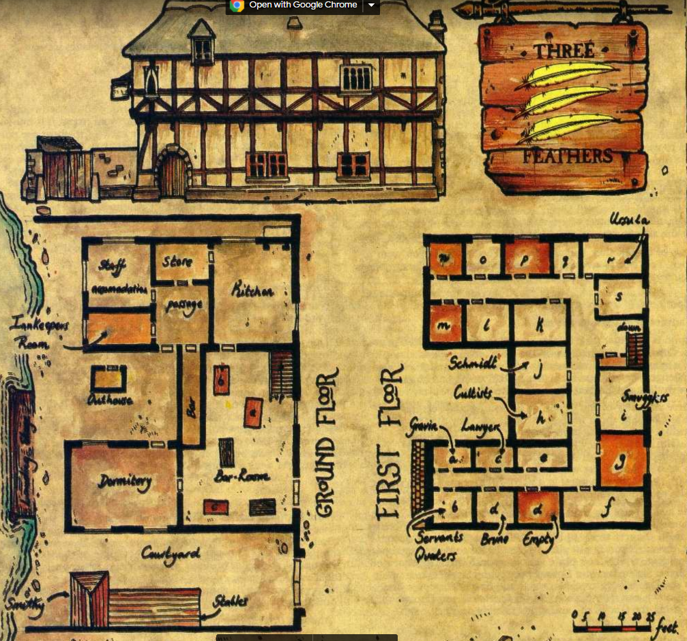

Confusão na taverna 3 penas
Pessoas
Amis
Campeão de Eusébio, Évora
- Idade: 32 anos
- Cabelo: castanho
- Olhos: castanhos
- Vestimentas: Traje simples de algodão não-tingido
- Outros: -
Amis
Campeão de Eusébio, Évora
- Idade: 32 anos
- Cabelo: castanho
- Olhos: castanhos
- Vestimentas: Traje simples de algodão não-tingido
- Outros: -
Amis
Campeão de Eusébio, Évora
- Idade: 32 anos
- Cabelo: castanho
- Olhos: castanhos
- Vestimentas: Traje simples de algodão não-tingido
- Outros: -
Amis
Campeão de Eusébio, Évora
- Idade: 32 anos
- Cabelo: castanho
- Olhos: castanhos
- Vestimentas: Traje simples de algodão não-tingido
- Outros: -
Amis
Campeão de Eusébio, Évora
- Idade: 32 anos
- Cabelo: castanho
- Olhos: castanhos
- Vestimentas: Traje simples de algodão não-tingido
- Outros: -
Amis
Campeão de Eusébio, Évora
- Idade: 32 anos
- Cabelo: castanho
- Olhos: castanhos
- Vestimentas: Traje simples de algodão não-tingido
- Outros: -
Amis
Campeão de Eusébio, Évora
- Idade: 32 anos
- Cabelo: castanho
- Olhos: castanhos
- Vestimentas: Traje simples de algodão não-tingido
- Outros: -
Amis
Campeão de Eusébio, Évora
- Idade: 32 anos
- Cabelo: castanho
- Olhos: castanhos
- Vestimentas: Traje simples de algodão não-tingido
- Outros: -
Amis
Campeão de Eusébio, Évora
- Idade: 32 anos
- Cabelo: castanho
- Olhos: castanhos
- Vestimentas: Traje simples de algodão não-tingido
- Outros: -
Amis
Campeão de Eusébio, Évora
- Idade: 32 anos
- Cabelo: castanho
- Olhos: castanhos
- Vestimentas: Traje simples de algodão não-tingido
- Outros: -
Introdução
A pedido de Erasmo PCs rumam para a cidade de Fosso Branco. Foi um longo dia sobre a montaria e, logo após o sol começar a se por, vocês avistam o portão que sinaliza a chegada em Fosso Branco. Mais alguns metros e se deparam com uma construção cuja placa suspensa tem a pintura de três penas. É notável que o local, uma estalagem situada defronte ao Rio Remanso, encontra-se mais movimentado do que o normal. Há uma cavalo de guerra e outras montarias próximos da entrada, assim como homens fardados supervisionando a retirada de baús e outros objetos dos animais.
O primeiro andar da taverna está apinhado de pessoas, com funcionários correndo de um lado ao outro para atender os fregueses. O dono está ocupado conversando com um escriba que porta uma bolsa de tamanho considerável. Vocês demoram dez minutos para conseguir a atenção do dono.
"Sejam bem-vindos" ele finalmente responde, "Peço desculpas por ter demorado tanto para respondê-los mas, como podem ver, hoje temos um hóspede distinto, ninguém menos que lorde Eusébio, do condado de Videira. Há tanto o que providenciar! Mas, bem, ao que interessa: vocês desejam um quarto? Mas é claro que sim, que pergunta tola. Ah, peço desculpas, volto em um momento!" ele finaliza antes de partir para atender um dos homens do conde. Em cinco minutos ele está de volta: "Mil desculpas, hoje está um caos".
A taverna

O 3 penas tem 10 quartos simples e 10 quartos duplos. No momento 5 dos quartos duplos (A-E) estão sendo usados por Eusébio e sua comitiva. Acesso ao corredor foi proibido, havendo dois soldados atuando como sentinelas no ponto X.
Cômodos A-K são duplos, já K-S são simples. Eusébio tomou uma ala inteira para si, logo o cômodo D será mantido vazio. Se os PCs pegarem um dormitório será dado G ou F.
Preço do quarto simples é 4 moedas, duplo 10 e um espaço no dormitório custa 1. Esses valores incluem janta e café da manhã. É possível incluir uma pessoa extra no quarto simples ou duplo, mas terão que dormir no chão e pagará-se um extra equivalente a metade do custo original.
Eventos
Trama 1
Uma questão de prioridades
Parte da taverna foi tomada por Senhor Eusébio e sua comitiva: seis soldados, um magistrado, um campeão e 3 servos. Ele está viajando em direção ao Condado Talude onde, tenso sido acusado de comportamento imoral e ser cúmplice em assassinato, será formalmente julgado. Eusébio pretende exercer seu direito ancestral de julgamento por combate, porém agentes trabalhando para Condessa Agnes, sua rival e acusadora, farão o possível para matar Amis, seu campeão.
Trama 2
Postos comprometidos
Eusébio não é o único nobre que se encontra na estalagem. Também presente (porém escondendo sua identidade) está Senhor Gastão, terceiro filho do Senhor Breno de Baixio, e sua amante Lurdes, filha de rico construtor de barcos de Fosso Branco. Parceiros no amor e no contrabando do minério de ferro, hoje reservaram um quarto sob o nome de Augusto, comerciante de Ferrara.
Infelizmente para os dois, foram reconhecidos por um dos servos de Eusébio, Ricardo, que trabalhou no solar de Breno. Ocorrerá uma tentativa de extorsão.
Trama 3
Uma face vinda do passado
Clara de Monsaraz, magistrada sob contrato de Eusébio, graduou-se na universidade de Porto Fundo, onde foi brevemente membra de uma sociedade secreta conhecida como ORDO ULTIMA. Nada mais era do que uma fachada para o culto à Naveh. O tempo frequentando os encontros não foi suficiente para que ela percebesse as reais consequência de o fazê-lo. Clara dedicou-se aos estudos e teve uma rápida ascensão, tendo caído nas boas graças da família de Eusébio. Agora, no entanto, o culto demandará algo dela, e um dos membros entrará em contato na estalagem.
Trama 4
Criando uma cena
Lurdes é casada com Tomé, mercador e herdeiro de outra rica família de Fosso Branco, canteiros cuja fama é regional. Ele foi informado do caso dela com Senhor Gastão por uma serva e entrará de forma repentina, embriagado, estalagem adentro. Acompanhado de quatro capangas, pretende apanhá-los no ato e, ignorando as consequências, açoitar Senhor Gastão.
Trama 5
Do pó ao pó
Nessa mesma noite um grupo de contrabandistas tem uma carga importante a ser embarcada no navio que os espera. Não é o que ocorrerá, no entando: dito navio sofreu avarias devido a uma rocha submersa e passará metade de um dia sendo reparado. Isso significa que os contrabandistas devem esconder a carga e esperar que a embarcação apareça no dia seguinte. Fator complicador é que a mercadoria é humana: João é um agitador de Arroio Seco cuja cabeça, ilegalmente, é desejada pelo lorde do feudo.
João foi drogado com Amortência e os contrabandistas, disfarçado como acólitos de Peoni, dizem estar levando-o para o enterro. O que eles não sabem é que, devido ao atraso, o efeito da droga passará no meio da noite.
Trama 6
Um punhado de coroas d'ouro
Úrsula, caçadora de recompensas, está seguindo os contrabandistas. Ela era muito próxima de João e, desde que soube de sua "morte", está convencida de que algo de estranho está ocorrendo. Ela seguiu os contrabandistas até a estalagem e deseja pegá-los no flagra.
Trama 7
É necessário roubar uma ou duas bolsas
Violeta, nome fictício de Maria de Fornalhas, é uma ladra que faz parte da organização de ladrões sediada em sua cidade. Como parte de seu rito de entrada foi instruída a comparecer na estalagem especificamente nessa noite.
Cronologia
21:00h
Os PCs chegam na estalagem.
Amis está sentado na mesa A em queda de braço com um dos soldados. Os outros soldados estão ao redor da mesa, bebendo e encorajando um dos lados no duelo. Amis derrota seu oponente com facilidade e aceitará outra queda por qualquer desafiante que apostar ao menos 5 moedas de ouro.
Servos de Eusébio estão espalhados pelas mesas e podem ser persuadidos a contar o porquê de estarem em Fosso Branco. Três cervejas ou um teste de persuasão com dificuldade 50~80 são requeridos. Caso PCs sejam bem-sucedidos descobrirão que Eusébio viajou para lidar com um assunto de tribunal. Na compra de 5 cervejas, saberão que a vinda do senhor tem relação com a morte de um convidado em sua corte. Os PCs realizam um teste de Inteligência para lembrarem de terem ouvido sobre as festas legendárias na corte de Eusébio. Com um sucesso crítico passam a saber que o morto é o pajem Virgílio, o qual prestava serviços para o senhor de Valongo. Virgílio foi encontrado morto após uma festa com a face imersa no ponche. Sua tia, Condessa Agnes, acusa Eusébio como sendo o assassino ou mandante do crime.
Ninguém na comitiva do Senhor acredita na acusação — o consenso geral é de que o pajem bebeu muito, ficou inconsciente e morreu afogado no ponche.
Em um dos cantos encontra-se um senhor de vestes simples bebendo de um caneco. Ele brinca com um par de dados e convoca todos os recém-chegados a jogar uma partida valendo uma moeda de ouro.
21:10h
Três viajantas adentram a estalagem. Eles tiram seus casacos encharcados pela chuva e os penduram próximos ao fogo para secar. Procedem para o balcão, reservam um quarto duplo e pedem três refeições quentes. Sentam então na mesa C e nÃo interagem com ninguém, mantendo-se a conversa entre si. São os cultistas de They go and sit at table C, and keep to themselves, trying not to become Involved In conversation with an-yone. These are the cultists de Marduk.
21:15h
Violeta, ladra, chega na estalagem, reserva um quarto simples e senta em uma das mesas para jogar carteado.
21:20h
Um servo do Senhor desce as escadas e vai conversar com Amis. O recado é breve: Eusébio quer que ele pare com a queda de braço para evitar machucar-se. O recado pode sero ouvido por todos na mesa de Amis ou mesas adjacentes e, caso a distância seja maior, requer um teste de Audição.
Amis levanta-se bruscante, assoma sobre o servo e responde de forma ríspida que o que ele faz no tempo livre não é da conta de ninguém. O servo sobe as escadas sem mais uma palavra.
21:25h
Eusébio desce as escadas acompanhado de três servos. Ele vai até a mesa de Amis e ordena que volte para o seu quarto. Amis obedece de forma emburrada. Uma serva pede a janta para a comitiva do Senhor. Os soldados e a maior parte da serventia come no bar, enquanto a refeição de Eusébio, Amis e o restante dos servos é levada para o segundo andar.
21:30h
Um barco pequeno atraca no cais com quatro pessoas: A small boat arrives, carrying four people: a well-dressed couple In their early twenties, and two boatmen. A room ls booked in the name of Augusto de Ferrara, and the crew of the boat are put up in the common room The couple disappears upstllirs without supper or even a drink; it ls clear that they oniy have eyes for each other. The boatmen stay In the bar, sitting at table a, and will be happy to chat and swap yarns with anyone If questioned about their passengers, they will say that they are Augusto e Lívia, a newly-wed couple from Ferrara. The boatman are aware of the couple's real identities, but have been well paid to keep quiet; they will reveal the truth if successfully Bribed, but they have a +20 modifier to their WP to resist bribery, and will require an offer of at least lOGCs.
21:35h
A coach arrives from tbe north, bearing the livery of Cartak Lines of Altdorf. It has three passengers, all in the black robes of Morr, who ask for a double room (room for themselves and their charge. They are conveying a body for burial, and ask to be allowed to keep it in their room. The barman is uncertain, and calls the landlord. He doesn't like the idea, but some gold discreetly chaqies hands and they get a secluded room, wcll away from Eusébio's party. They head for their room immediately, carrying a coffin and telling the landlord _not to worry if there is any noise from their room, a, they are required to pray over the body from midnight until dawn. The two coachmen stay In the bar-room for most of the evening, before retiring to the dotmitory; their keep is paid by the coaching company, which has a regular arrangement with the inn.
21:50h
Úrsula, caçadora de recompensas, arrives at the Inn on horseback. After seeing her horse stabled,she entem the bar-room and books a single room (room R) for the night. Despite her appearance, she seems friendly enough, and will converse happily with anyone. If she is questioned about her business, she will claim to be working for the Kemperbad town council, taking a message to Nuln. She will not reveal any details about her supposed mission, saying that it ls confidential.
At some time during the early part of the evening, you might have one of the minor male NPCs - a servant or man-at-arms - make an improper suggestion to her. She flattens him quickly and efficiently, and the landlord steps in to prevent a brawl taking place, If one of the adventurers makes an improper or insulting comment to her first, she will react in the same way, using all of her skills which relate to unarmed combat, She will not draw a weapon, and the landlord and staff of the inn will step in after D4 rounds, aided by as many of the inn's other patrons as are necessary.
22:00h
A liveried servant comes downstairs from the Eusébio's rooms, and orders all her party to retire for the night, since they will be starting at first light tomorrow. Reluctantly, the various servants and men-at-arms finish their drinks and drift off to the dormitory.
At about the saqie time, 'Schmidt' comes down to the bar-room for a bottle of wine. As he is on his way back to his room, he is approached by one of Eusébio's servants, A heated but inaudible exchange takes place, and Schmidt hurries back upsiairs, looking very angry. The servant heads off to the dormitory. Characters with LipReading skill may be able to discover that the servant is threatening to tell someone something about 'Schmidt', but that is all.
22:10h
Amis returns to the bar-room, grinning broadly and looking around with exaggerated caution to make sure that none of the Eusébio's party is still there. He orders a mug of ale, telling the barman to 'keep 'em coming', and sits down at table a with the two boatmen, who arc still there. After a few minutes an arm wrestling contest starts again. Úrsula watches for a while, and then challenges Amis, putting five Crowns on the table.
Amis demurs for a few moments, but then accepts the challenge. A small crowd gathers as the contest begins. First, Amis's arm begins to go down - he was being gentle with the lady - but he quickly applies more of his strength and the contest begins in earnest. Neither contestant moves - a sheen of sweat breaks out on Amis's forehead, but it ls an even match. Then Úrsula's arm wavers, and Amis - no longer the gememan - pours on the power and forces her arm slowly but surely down to the table.
Although he has won, Amis looks at Úrsula with a new respect, and the two of them spend some time talking and drinking together. Amis wlll not accept any more arm-wrestling challenges tonight.
A few minutes later, a tray of fresh drinks is taken to Amis. There is nothing unusual in this - ale has been going steadily to his table since he sat down- but one mug of ale is drusged. It is intended for Amis, but you should talrl: care that he doesn't actually drink it, since he has things to do later on. . Instead, a minor NPC or one of the adventurers should pick it up. The ale is laced with 3 doses of Oxleaf, giving a base 15% chance of detecting the poison. If an NPC takes the drink, all three doses take effect and he suddenly slumps unconscious over the table. If a PC takes the drink, foUow the normal rules for detecting poisons, and make Poison tests normally.
If and when the victim of the drugged ale passes out, Amis will make some commment about people not being able to hold their drink, and if any of the adventurers are looking in the direction of the bar, a successful Observe test will reveal that one of the staff suddenly looks worried and leaves. If the adventurers pursue this individual, you should ensure that he gets away In the darkness of the courtyard.
22:15h
One of the 'initiates' comes down and speaks 10 the landlord. On a successful Observe test, a rew Crowns will be seen changing hands, and a successful I.qt test by a character with Ltp Readtng skill will reveal that the 'Initiates' are expecting a boat to.arrive at some time during the night, and that the landlord is to tell them the moment it arrives. The 'Initiate' returns to their room. As soon as the 'Initiate' is out of the bar-room, Úrsula goes to speak to the landlord - successful use of Ltp Reading skill will reveal that she is asking the landlord about them, and that he is telling her what they told him. A few more coins change hands, and Úrsula goes back to Amis's table.
22:25h
One of the Eusébio's servants comes down and orders Amis to bed, saying that Eusébio has checked his room and found him missing. He goes sheepishly to his room.
22:40h
Clara, a advogada, comes down to the bar-room, dressed in a nightshirt and a silk dressing-gown. As he does so, one of the three cultists leaves the table and heads upstairs. Clara orders a brandy, and takes it back to his room (room c). A few minutes later, the other two cultists go upstairs to their room (room b).
22:45h
One of the cultists goes to Rechtshandlcr's room He knocks on the door, and the lawyer answers it after a moment. There ls a brief exchange of words - too low to hear - and the cultist is admitted. A minute or so later, raised voices can be heard (counting as a normal noise for listenel:'S in the passage or in adjoining rooms; and as a /Qlld noise for characters listening at the door): Clara's voice saying that he will not submit to blackmail, and the other's saying that he has no choice. Abruptly, everything goes quiet.
22:50h
Clara opens the door of hisroom quietly, and looks outSide. If there is anyone in the passage, he will remark that he thought he h somC!lhing outside, and close the door, checking the passage again five mintues later. If the coast is dear, lie will drag the cultist's body Into the passage. If the PCs are not In their room at this p,oint, he will deposit the body there - coiilpletely by chance - .if not, he will leave it in the store cupboard.
23:00h
'Schmidt' comes downstairs, looking drawn and worried. H the PCs are still in the bar-room, he approaches them, and asks one of them to take a message to thf.: tl rmitory for him, offering l0GCs for tht; character's trouble. The job is to tell one of the Eusébio's servants - a Hans Erpresser - that Schmidt wants to see him. If the PCs are not in the bar-room at this time, 'Schmidt' will hire one of the boatmen or coachmen to carry the message. Having paid the messenger; 'Schmidt' returns to his room.
23:05h
Erpresscr goes to see 'Schmidt'. He knocks on the door, and is admitted straight away. ereisasingle thump from within the room (counting as a nonnal noise for listeners at the door, or a soft noise for listeners In the passage or adjoining rooms) as 'Schmidt' kills the servant. Afew moments later, 'Schmidt' cautiously opens his door to see if the passage is dear, and will attempt to dispose of the body in the same way as Clara (see 10:50pm above).
23:15h
A message is delivered to the PCs by one of Eusébio's servants, requesting them to visit the lawyer's room. He explains that the travellers In room b are blackmailing him, and offers the PCs.
250GCs to dispose of them. While Clara is talking to the PCs, Úrsula leaves the bar 'to chock on her horse' - actually she is spying out the room used by the smugglers.
If the PCs accept Clara's offer, they will find that the cultists' room is not locked, since the two remaining cultists arc waiting for their cc:im.panion to return - they have not yet become concerned about his lOl)g absence. The first attack made on each cultist Is at a + 10 borms(cumulative with any charge or other bonuses), since they an: not expecting to be attackal. If any noise goes on for 3 rounds or more, guests from adjoining rooms will come to investigate, spending one round knocking on the door and then entering the room to sec what Is going on.
23:30h
There is a great hammering on the inn's main door. The landlord refuses to openit at first, but it seems that the knocker is prepared to break it down if necessary. After a rew minutes the door is
opened, and in comes a well-dressed - but fairly drunk - young man and three large an" aggressive-looking thugs. The young man demands to know whether a Senhor Gastão is here, asking everyone in the bar-room ln loud and angry tones. When everyone has told him that there is no-one staying in the Inn under that name, he pauses for a moment.
'Well, his boat's moored outside,' he says, 'So I suppose we'll Just have to go and look for him. Gentlemen?' He waves his three thugs upstairs, and a brawl breaks out as the staff try to stop him, aided by several of the inn's patrons. Whether or not the PCs are in the bar-room at this time, you should arrange for the brawl to reach them, and for one of the PCs to lose a dagger in the confusion - this will be important later on.
If Tomé - for it is he - makes it ,upstairs, he will systemattcally break down every door until he is stopped or until he finds Senhor Gastão. If he succeeds, there will be a terrible and noisy scene as two of the thugs hold the nobledown and Tomé horsewhips him. Thethird thug holds the weeping young woman and forces her to watch At some tim: during this event, Úrsula will return to the bar-room. She will automatically investigate any disturbance. If the brawl reaches the upper storey and lasts for more than three rounds up there, D6 of Eusébio's men-at-arms (unarmed and m1armoured, of course) will come to investigate, and will join the staff and other patrons in trying to put down the disturbance.
23:50h
If the two remaining cultists are still alive, they will visit the lawyer's room, where a violent argument willtake place. By the time anyone comes to see what is going on, Clara will be dead and there will beno-one else in the room, which is bolted ftom the Inside. The cultists left via the window, and spend about five minutes on the roof making their way back 10 their own room.
Meanwhile, Úrsula goes to her room, locking the door.
Midnight
There is a tremendous shouting and scuffling from the smugglers' room. The laocllord tries to prevent anyone going in, what the 'initiates' told him about their needing to conduct services over the body throughout the night. However, after a few minutes he decides he must speak to them, and will be glad of anyone's company. As he approaches the door of the room, everything suddenly goes q_uiet. One of the 'initiates' opens the door when the landlord knocks, and apologises for the noise, promising to try to be quieter during the rest of the night. In the room, two 'initiates' can be seen sitting firmly on a third. The one at the door explains that their brother sometimes has these spasms, being particularly sensitive to vibrations on The Other Side. It makes him a first-class priest of Morr, but can be inconvenient. The landlord goes away, puzzled.
The noise was caused by the smugglers' charge waking up as the effects of the drug wore off,and their efforts in keeping him quiet. If the PCs accompany the landlord to the room, they may realise that there arc now four 'initiates'! If they maition this, the landlord will tell them that they must be mistaken, and will be very unwilling (-20 modifier to any Fcl tests) to go back to the room or to allow anyone else to do so. If anyone does go back to the room, they will find three 'initiares' there; the smugglers have knocked their charge unconscious and hidden him under a bed
00:10h
Violeta heads for the dormitory, and the Halfling asks if anyone else wants to play cards. If not, he also heads for the dormitory. The boatmen and coachmen also retire.
00:20h
There is a loud female scream from the Eusébio's wq. Wh.en the PCs arrive on the scene, they find a number of servants and others crowded round the door to Amis's room - he has been found dead, with a dagger embedded betwem his shoulders. Everybody is roused from th.cir beds and summoned to tbe·bar-room - at this point, it will become obvious that other people arc dead or missing.
The innkeeper, by this time, bas managed to convince himself that there is a murderer on the loose, and advises everyone to lock themselves in their rooms and not move until daylight, when he can send for the Roadwardcm and/or the River Patrol.
Before everyone goes back to bed, Eusébio displays the dagger with which Amis was killed; it will look strangely familiar to the adventurers, since it is the one which was stolen from one of them about 20 minutes earlier. If the owner of the dagger does not own up straight away, one of the .inn's sUff (the one who stole it, naturally) will say that he remembers seeing an identical dagger in the character's possession. The PC will then be challenged to produce the weapon, but will, of course, be unable to do so. An ominous murmur develops in the room, and you should do your best to convince the player that his character stands a good chance of being lynched. H the character tries to talk his way out of trouble by claiming that the dagger went.missing during t,he brawl at midnight, make the usual Fel test, with modifiers for Publtc Speaking or any other skill that you judge to be relevant, but impose a penalty of -20 - people prefer the simple explanation that the character murdered Amis.
After all the accusation and protestations of innocence have died down, Eusébior ises.
'I am authorised by my aunt,' she says, 'To exercise her Imperial right of dispensing connnon justice, and it seems as well that I should do so here, especially since I am the most promlnent wronged party. Therefore, I rule that this group shall be locked in their room until the mocning, when I shall decide further. All weapons and cquipmcm shall be removed from the room, and I shall post a guard at the door and beneath the window. 'You, however,' - she points at the stongcst-looking warrior-type PC - 'I sentence to replace my murdered champion until it shall please me to decide otherwise.' A murmur runs round the bar, but no-one questions her ruling.
The body is handed over to the 'initiates' by the Eusébio, who requests them to look after it until dawn. They agree to do so, and it is taken to their room, wrapped in a blanket, as are any other bodies truit have been discovered so far.
The PCs will be locked in their room, with two of the Eusébio's men-at-arms outside the door and another two beneath the window. You should make it clear that there are too many people in the bar for them to be able to escape at stage. All their weapons and other equipment arc removed by the Eusébio's men-at arms. The character whom Eusébio has chosen as her new champion is taken to Amis's room (room d) and locked in.
After about half an hour, everyone goes back to bed.
01:20h
A servant comes to the PCs' room to say that Eusébio wants to talk to them. They are taken to her room (room a) by four of the men-at-arms, stopping along the way to collect the new champion. TheEusébiois waiting for them, still fully dressed. After ordering the men-at-arms to wait outside, she speaks to the PCs.
I'm sorry it was necessary to have you locked up,' she says, 'But it seemed to be the only way to calm everyone down. I believe you are innocent - no-one would be so stupid as to leave his own dagger behind as a clue. Anyway, we have until dawn to discover who actually killed Amis. I'm sure that Dammenblatz ls behind it all - I'm going to Kemperbad to fight a lawsuit against him. If I'm right, then his agents will try to kill my new champion' - she favours this character with an ironic smile - 'But this time you will all be waiting. The guard will be left on your room for the sake of appearances, but you will spend the rest of the night in Amis's room. One weapon of your choice will be returned to each of you - no, no more than one I don't want you trying to make a break for it. ll, then, let's get moving - there isn't much of the nisP,t left.
The PCs are each given one item from their weapons and equipment, and locked in Amis's room. The men-at-arms return to their posts guarding the PCs' room and Amis's room. There ls to be no Light in the room, so the PCs are obliged to sit in the darkness, waiting for something to happen. Each character should make a WP rest. Each character who fails the test falls asleep before the next event happ,ens.
02:00h
Um ruído suave de raspagem vem da chaminé. Qualquer PC que ainda esteja acordado tem 30% de chance de ouvi-lo, caso estejam dormindo têm 10% de chance de serem acordados pelo barulho.
Se os PCs correrem para investigar ou derem qualquer outra indicação de que estão acordados, o barulho vai parar abruptamente. Se eles ficarem quietos, alguém descerá pela chaminé e entrará no quarto.
Personagens com a habilidade Visão Noturna reconhecerão a figura como um dos funcionários da estalagem. O servo, que mal consegue ver na escuridão, se aproximará cuidadosamente da cama, contando com a memória e o cuidado para evitar tropeçar em algo. Se for atacado, o servo tentará escapar pela janela ou pela chaminé, e os dois guardas postados do lado de fora do quarto entrarão no primeiro som de qualquer perturbação. Personagens que estiverem dormindo quando o servo entrar no quarto não poderão fazer nada durante a primeira rodada e sofrerão uma penalidade de -20 em todos os testes de dados.
Se o servo for capturado, os guardas o amarrarão e o amordaçarão, para aguardar a vontade de Eusébio pela manhã.
04:30h
A aurora chega. Eusébio chama todos novamente para a sala do bar, mas não há resposta ao bater na porta do quarto dos contrabandistas. A porta é forçada aberta e uma cena de carnificina é revelada. Todos os 'iniciados' estão mortos e o caixão com o qual eles entraram na estalagem foi arrombado e contém um corpo recém-morto e sem cabeça. Úrsula também está desaparecida e seu cavalo foi retirado dos estábulos.
Depois que todos se reuniram, Eusébio apresenta o servo capturado pelos PCs e explica que ele estava a serviço do Barão von Dammenhlatz e é responsável pelo assassinato de Amis, bem como pelo atentado contra seu campeão recém-nomeado. Ela determina que o servo deve ser trancado e entregue aos Guardas da Estrada ou à Patrulha Fluvial na primeira oportunidade, e então todos seguem seu caminho. Foi uma noite movimentada e que ninguém esquecerá tão cedo.
Prosseguimento
Se você quer seguir com a aventura principal, Eusébio pode permitir que sua nova "campeã" siga em frente, explicando que ele era apenas um isca para capturar o assassino e que ela pode encontrar alguém melhor para ser sua campeã de qualquer maneira... No entanto, ela dará ao grupo 50 moedas de ouro cada um pela ajuda, e pode se tornar um contato útil no futuro.
Por outro lado, você pode desenvolver a aventura fazendo com que ela insista que seu novo campeão a acompanhe até Kemperbad. Ele será pago com 5 moedas por dia, mais alimentação, com um bônus de 250 moedas se ele ganhar o caso. O resto do grupo pode se juntar ao seu comboio, sendo pagos com 1 moeda por dia, mais alimentação. Eles podem viajar em seu barco enquanto o grupo de Eusébio segue a estrada do rio. A jornada para Kemperbad será tranquila, a menos que você queira que outro agente de Dammenblatz faça uma tentativa de assassinar o campeão em outra estalagem - e a presença de Eusébio garantirá que os aventureiros não sejam incomodados pela Patrulha do Rio ou outros oficiais.
Quando chegarem a Kemperbad, o "campeão" será colocado na arena com uma arma e uma armadura de sua escolha, para enfrentar o campeão de von Dammenblatz (use o perfil de um Lutador de Arena). O combate é até o primeiro sangue e quem for derrotado(a) perde a disputa e o caso. Assim que um dos combatentes for ferido, os soldados que supervisionam o julgamento correrão para separá-los. Se o aventureiro ganhar, Eusébio ficará encantada e comprará qualquer coisa que ele pedir no dia seguinte ao julgamento. Se o PC perder, Eusébio será multada, e os aventureiros serão dispensados de sua presença. Uma saída rápida de Kemperbad pode ser uma boa ideia...